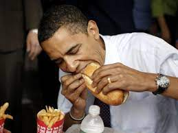

Back to Index.html

| Question | Difficulty | Link |
|---|---|---|
| 127. Word Ladder | Hard | https://leetcode.com/problems/word-ladder/ |
| 45. Jump Game II | Medium | https://leetcode.com/problems/jump-game-ii/ |
| 1. Two Sum | Easy | https://leetcode.com/problems/two-sum/ |

The FitnessGram™ Pacer Test is a multistage aerobic capacity test that progressively gets more difficult as it continues. The 20-meter pacer test will begin in 30 seconds. Line up at the start. The running speed starts slowly but gets faster each minute after you hear this signal. A single lap should be completed each time you hear this sound. Remember to run in a straight line, and run as long as possible. The second time you fail to complete a lap before the sound, your test is over. The test will begin on the word start. On your mark, get ready, start.
Obama eating a sandwich